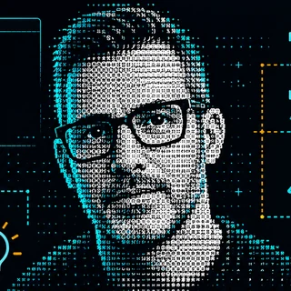

A SecHack története és célja
Digitális biztonság, egyszerűen: hétköznapi nyelven, hétköznapi eszközökkel.

Mi a SecHack?
A SecHack egy rövid, IT-biztonsági lifehack podcast, amelyből megtudhatod, hogyan használhatod biztonságosabban a digitális eszközeidet – anélkül, hogy sokat kellene költened.
Kinek szól?
Hétköznapi felhasználóknak, nem feltétlenül informatikusoknak. Ha van telefonod, e-mail-fiókod és Wi-Fi-d, neked is szólnak a tippek.
Mi a cél?
Az, hogy a digitális biztonság ne tűnjön ijesztőnek vagy túl bonyolultnak. Gyakorlati példákkal, érthető magyarázatokkal és ingyenes vagy olcsó megoldásokkal mutatom meg, mit tehetsz lépésről lépésre. Teljes védelmet nem ígérek – azt viszont igen, hogy őszintén és érthetően mondom el, mi számít igazán.
Alapelveink
Három ígéret
Rövid és érthető.
Rövid epizódok, amelyek egyből a lényegre mennek.
Gyakorlati és azonnal használható.
Olyan tippek, amelyeket még aznap kipróbálhatsz.
Ingyenes vagy pénztárcabarát megoldások.
Nem kell sokat költened, hogy előrébb lépj.
GYIK
Gyakori kérdések
Kinek szól a SecHack?
Bárkinek, aki telefont, számítógépet vagy netet használ, és szeretné biztonságosabban csinálni – informatikai előképzettség nélkül is.
Kell hozzá szakmai tudás?
Nem. Pont az a lényeg, hogy érthetően, szakzsargon nélkül magyarázzak el mindent.
Milyen hosszúak az epizódok?
Az epizódokat 10–15 percesre tervezem, hogy egy kávé mellett vagy ingázás közben is belefér.
Mikor jelenik meg új epizód?
Megjelenési ütemezés még nincs, de amint elindul a sorozat, itt és az epizódok oldalán is megtalálod.
Ingyenes eszközökről lesz szó?
Igen, az ingyenes vagy pénztárcabarát megoldások nálam alapszempont. Ha fizetős cucc is szóba kerül, szólok.
Garantálható a teljes védelem?
Nem, és nem is ezt ígérem. A cél az, hogy néhány egyszerű lépéssel nehezebb célpont legyél.